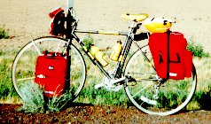
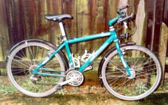
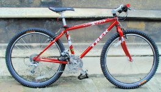
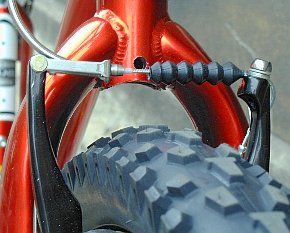
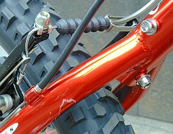

To set the context of this article, what do I mean here by "touring/leisure bike"? Basically, I mean a tough versatile bike for general road riding and occasional light off-tarmac duty, like on dirt roads, gravel-surfaced paths, and reasonably smooth trails. It can be used for touring, commuting, day rides, short fun rides, whatever you want. The emphasis is on comfort, enough comfort to spend all day in the saddle, not on speed. It should have a reasonably upright riding position and a variety of hand positions.
Since you may want to go on long tours it has the capacity to attach front and rear pannier racks, and since you can never predict the weather, it should be able to take mudguards (fenders). It has a wide variety of gears, lower than on a traditional racing style bike, to enable you to go up steep hills with lots of luggage. To make shifting easier, it should have the shift levers close to your hands. It should have mountain bike style brakes to give you more clearance for wider tires and fenders.
The traditional bike that satisfies all these criteria is called, not surprisingly, a touring bike, and it looks pretty much like my old touring bike to the right. It has 700c wheels, drop handlebars, a triple chainring, and a full complement of racks and bags. It does the job well.
However, this sort of bike does not suit all people. Many people like a much more upright position than you can get on this sort of bike. Also, they prefer the fingertip shifting and braking you get with mountain bike type levers. The solution, then, is to make over a mountain bike.
Mountain bikes can be configured to give you a much more upright riding position than traditional touring bikes. They don't in general have shorter top tubes, but it is easy to find stems that raise the handlebars up by quite a bit, while not putting them forward very much (see the info on mountain bike stems in Bodge Your Bike to Fit). Furthermore, mountain bike bars are straight, meaning that the brakes are accessible from the part that is closest to you, while bar ends allow you to change hand position and stretch out a bit when it isn't necessary to have your hands next to the brakes.
Not all mountain bikes are suitable for conversion for tour/leisure use. I used a Fisher AL-1 (the green bike above) but I wanted to find a modern bike suitable for conversion. Looking around in my local bike shops, I found that the Trek 920 suited this purpose perfectly. It has an excellent steel frame, and while the bits on it aren't top notch they are functional and can be replaced with better quality ones when they wear out. It has all the attachment points you need to put on racks and mudguards, and it has a threadless headset, allowing maximum choice of replacement stems. I'll use pictures of the 920 to illustrate the list of things to look for. [Sadly, Trek discontinued the 900 series bikes many years ago, so the 920 doesn't exist any more. Furthermore, nowadays it's pretty hard to find a MTB without front suspension. However, there are some, and they are worth searching out. Since, the picturesof the Trek 920 illustrate what you should be looking for, so I'll continue to use it as an example.]
First, you should look for a good frame. Since this bike will be used mainly for on-road use, it will last basically forever, so make sure you get a good quality, not too heavy frame that fits you correctly. See A beginner's guide to buying a mountain bike for info on this.
Then check out the fork. It should be a rigid fork, not a suspension fork. A bike without front suspension is better suited to general purpose riding than a bike with a suspension fork: they are lighter, cheaper (for the same quality of components), more reliable, and less attractive to thieves. It's also easier to attach mudguards and a front rack to a rigid fork. Make sure that the fork end has a threaded hole in it and that it isn't too tall. Some forks on rigid bikes are very tall to allow them to be upgraded with long travel suspension forks. It is difficult to fit mudguards to these forks. Make sure that there is a horizontal hole into the crown of the forks, to allow you to attach the mudguard and possibly a dynamo headlamp. Since the bike will almost certainly have V-brakes, make sure that the hole is not too far above the cable that joins the tips of the brakes together, as if it is the mudguard will interfere with the brakes unless you bodge something to go between the mudguard bracket and the hole. The fork doesn't need special braze-ons for a front rack: Blackburn's well-respected Lowrider rack has loops that go around the fork to anchor it in place.
Then check out the provisions in the rear section of the bike. You need threaded holes attached to the rear dropout to fasten mudguards and a rack. Look at the seatstays. While not absolutely essential, threaded holes on the sides of the seatstays make rack mounting easier. You also need either a hole through the seatstay bridge, or if the bike has a wishbone fork, a hole through the wishbone or a threaded hole on one side of the wishbone. Again, check the position of this hole w.r.t. the cable joining the tips of the brakes.
The bike shop should swap the stem for a more upright one (if you need it) for free. You'll also want some slick tires, which again the shop should swap for free or very little money. I've been very happy with the Tioga City Slicker tires, but there are quite a variety of good slicks out there. A set of SKS mudguards will set you back less than 25 pounds, a good rack 20 to 25 pounds, and some decent bar ends less than 15 pounds. Since in my local shop the Trek 920 costs 370 pounds, the entire converted bike will cost about 430 pounds.
More Bike Articles